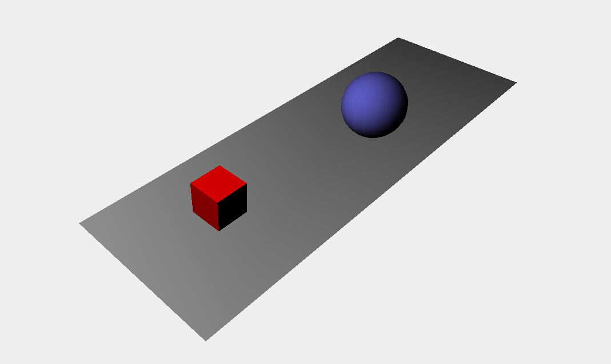
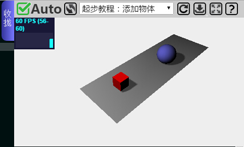
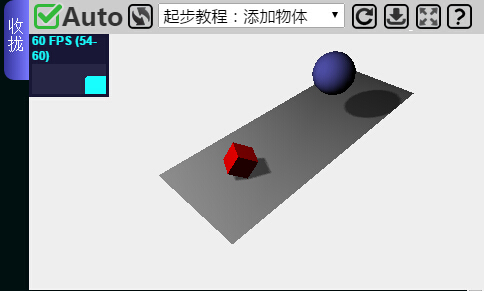
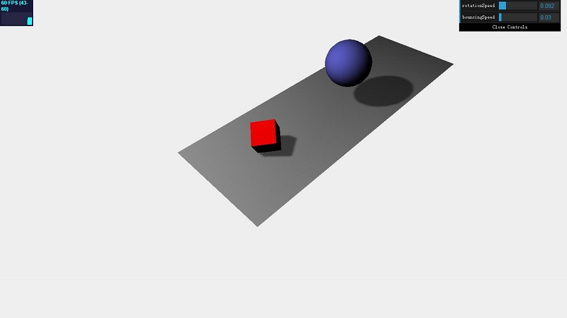

（1）在场景内添加光线，改变物体材质
（2）让光照下的物体出现影子
（3）增加动画来润色
到了这一节，我们通过学习了前面两个的基础内容，我们可以开始方块一点点速度，开始了解光，材质的最基本功能，以及阴影的产生。我们先回顾下前面章节的内容，我改写了一下代码：
<!DOCTYPE html>
<html>
<head>
<script type="text/javascript" src="../js/three.js"></script>
<script type="text/javascript" src="../js/jquery-1.7.1.min.js"></script>
<style>
body{
margin: 0;
overflow: hidden;
}
</style>
</head>
<body>
<div id="WebGL-output"></div>
<script type="text/javascript">
var scene = new THREE.Scene();
var camera = new THREE.PerspectiveCamera(45, window.innerWidth / window.innerHeight, 0.1, 1000);
var renderer = new THREE.WebGLRenderer();
renderer.setClearColorHex(0xEEEEEE);
renderer.setSize(window.innerWidth, window.innerHeight);
//创建平面
var planeGeometry = new THREE.PlaneGeometry(60, 20, 1, 1);
var planeMaterial = new THREE.MeshBasicMaterial({
color: 0xcccccc
});
var plane = new THREE.Mesh(planeGeometry, planeMaterial);
plane.rotation.x = -0.5 * Math.PI;
plane.position.x = 15;
plane.position.y = 0;
plane.position.z = 0;
scene.add(plane);
//创建立方体
var cubeGeometry = new THREE.CubeGeometry(4, 4, 4);
var cubeMaterial = new THREE.MeshBasicMaterial({
color: 0xff0000,
});
var cube = new THREE.Mesh(cubeGeometry, cubeMaterial);
cube.position.x = -4;
cube.position.y = 3;
cube.position.z = 0;
scene.add(cube);
//创建球体
var sphereGeometry = new THREE.SphereGeometry(4, 20, 20);
var sphereMaterial = new THREE.MeshBasicMaterial({
color: 0x7777ff,
});
var sphere = new THREE.Mesh(sphereGeometry, sphereMaterial);
sphere.position.x = 20;
sphere.position.y = 4;
sphere.position.z = 2;
scene.add(sphere);
camera.position.x = -30;
camera.position.y = 40;
camera.position.z = 30;
camera.lookAt(scene.position);
$("#WebGL-output").append(renderer.domElement);
renderer.render(scene, camera);
</script>
</body>
</html>
上一节的内容中，我们添加了平面，立方体和球体，我们将它们放到同一个场景内，并且调整了下物体的大小和位置，以及镜头拍摄的角度。现在我们要给场景添加光线：
var spotLight = new THREE.SpotLight( 0xffffff );
spotLight.position.set( -40, 60, -10 );
scene.add( spotLight );
这三行代码将一个点光源添加到了场景内。里面加入了一个颜色参数，它发出的是白光。如果我们此时我们将代码加入到一开始的场景中，并渲染场景，你却无法看出现在和刚才的场景有任何区别。原因是不同的材质对于光有不同的反应。我们在先前的实例中使用的基本材质在场景中不会受到任何光源影响。他们仅仅用特定的颜色渲染对象。所以我们必须改变平面、球体和立方体的材质：
...
var planeGeometry = new THREE.PlaneGeometry(60, 20);
var planeMaterial = new THREE.MeshLambertMaterial({
color: 0xffffff
});
var plane = new THREE.Mesh(planeGeometry, planeMaterial);
...
var cubeGeometry = new THREE.CubeGeometry(4, 4, 4);
var cubeMaterial = new THREE.MeshLambertMaterial({
color: 0xff0000
});
var cube = new THREE.Mesh(cubeGeometry, cubeMaterial);
...
var sphereGeometry = new THREE.SphereGeometry(4, 20, 20);
var sphereMaterial = new THREE.MeshLambertMaterial({
color: 0x7777ff
});
var sphere = new THREE.Mesh(sphereGeometry, sphereMaterial);
...
上述代码要求我们把物体的材质给更换掉，我们修改这三部分代码后，运行效果如下：
做到这里，立方体和球体看起来好多了。但是看上去还是不够真实，因为缺少了阴影。
添加阴影是相当容易的，需要分成简单的三步。
第一步：
renderer.shadowMapEnabled = true;
你只需将上面一句代码添加在创建render的代码下面即可。第一个要改的地方就是我们要告诉渲染器我们想要阴影。你可以设置shadowMapEnabled的值为true。如果你现在看下修改后的效果，你还不能发现有任何区别。这是因为我们必须明确定义哪些对象投射了阴影，哪些对象接收到阴影。
第二步：
在我们实例中，我们想要让立方体和球体在平面上产生阴影。你可以通过对这些对象的相应属性设置为true，如下所示做到这一点：
plane.receiveShadow = true;//平面来接受阴影
...
cube.castShadow = true;//方块会产生阴影
...
sphere.castShadow = true;//球体会产生阴影
第三步：
我们要定义哪些光源会产生阴影。并非所有的光都会产生阴影，你会在以后的教程中学到更多，但是我们在例子中使用的SpotLight()可以产生影子。我们只需要设置正确的属性，阴影最终就会被渲染出来：
spotLight.castShadow = true;
最后一个我们将在第一个场景加入的效果是一些简单的效果，因为物体放着那边不动实在是太单调了。
我们这边不涉入复杂的动画效果，镜头移动等。我们在第二节教程中看到的第一个旋转的立方体就是在每次渲染时，改变一些角度来实现。而这次的动画，是同样的原理，只不过略微复杂一点点。
在我们加入动画前，我想要介绍一个小型的很有帮助的库，它能给我们有关动画正在进行的帧速率信息。这个库的作者和Three.js的作者是同一个人。此库会给我们渲染出一个小图形来显示来自动画的每秒的帧数（FPS）。
要添加这个统计功能，我们首先需要在HTML<header>标签内包含这个库的引用：
<script type="text/javascript" src="../js/stats.js"><"/script>
然后我们增加一个<div>元素用来呈现统计画面：
<div id="Stats-output"><"/div>
剩下要做的只是初始化统计数据并把它们添加到<div>元素内。如下所示：
function initStats() {
var stats = new Stats();
stats.setMode(0);
stats.domElement.style.position = 'absolute';
stats.domElement.style.left = '0px';
stats.domElement.style.top = '0px';
$("#Stats-output").append(stats.domElement);
return stats;
}
这个函数初始化统计数据。有趣的部分是setMode()函数。如果我们把参数设为0，我们测量的是FPS，如果参数设为1，我们能测量到渲染耗时。对于这个例子，我们对FPS更感兴趣，所以我们设置参数为0。在我们匿名jQuery函数的开头，我们调用这个函数就能得到统计数据：
var stats = initStats();
剩下要做的事就是当我们在新的渲染循环时告知stats对象。我们可以增加一个stats.update()方法到render()去调用。函数如下所示：
function render() {
stats.update();
requestAnimationFrame(render);
renderer.render(scene, camera);
}
如果你执行了修改后的方法，你可以看到统计信息在左上角显示出来，如截图所示：
第一节讲过了方块绕坐标轴旋转，这边就不再重复了。我们可以让球弹跳。
var step = 0;
function render() {
...
step += 0.04;
sphere.position.x = 20 + (10 * (Math.cos(step)));
sphere.position.y = 2 + (10 * Math.abs(Math.sin(step)));
...
requestAnimationFrame(render);
renderer.render(scene, camera);
}
我们想让球体从场景中的一个点沿着漂亮，平滑的曲线弹跳到另一个点。对于这个我们需要改变它在x轴和y轴的位置。Math.cos()和Math.sin()函数通过使用step变量帮我们创建了平滑的轨迹。我不想在这里深入到这个是如何工作的细节。现在你需要知道的只是step+=0.04定义了球体弹跳的速度。在以后的教程中，我们会深入到如何把这些函数使用在动画中，我会解释所有的细节。下面的截图显示了已经实现的动画：
在结束这一节教程前，我想多加一个元素到我们的基本情景。当与3D场景，动画，颜色和属性一起使用，往往需要一些试验，以获得合适的颜色和速度。这将是很容易的，如果你可以只创建一个简单的图形用户界面使得你可以飞一般的改变这些属性，这会很简单。幸运的是，这里正好有一个。
几个来自谷歌的人创造了dat.GUI库。你可以从http://code.google.com/p/dat-gui/找到在线文档，它能很方便的创建一个简单的用户界面组件来修改代码中的参数。在本节这个部分，我们将使用dat.GUI来给我们实例增加个用户界面来：
● 控制球的弹跳速度
● 控制立方体的旋转
正如我们先前的统计功能，我们先用如下代码将库加到HTML页面的<header>标签内：
<script type="text/javascript" src="../js/dat.gui.js"><"/script>
接着我们需要配置的是一个JavaScript对象，它将包含我们想要用dat.GUI库改变的属性。在JavaScript代码主体部分，我们将增加下面的JavaScript对象：
var controls = new function() {
this.rotationSpeed = 0.02;
this.bouncingSpeed = 0.03;
}
在这个JavaScript对象中，我们定义两个变量：this.rotationSpeed和this.bouncingSpeedIn并且赋上默认值。然后我们将这个对象传到一个新的dat.GUI对象并且定义了这两个属性的范围：
var gui = new dat.GUI();
gui.add(controls, 'rotationSpeed',0,0.5);
gui.add(controls, 'bouncingSpeed',0,0.5);
rotationSpeed和bouncingSpeed属性都设置的范围为从0到0.5 。我们现在需要做的就是确保在我们的渲染循环中，我们直接引用这两个属性，所以，当我们通过dat.GUI改变变量的值，它会立即影响到我们创建的物体的旋转和弹跳速度。这如下所示：
function render() {
...
cube.rotation.x += controls.rotationSpeed;
cube.rotation.y += controls.rotationSpeed;
cube.rotation.z += controls.rotationSpeed;
step += controls.bouncingSpeed;
sphere.position.x = 20 + (10 * (Math.cos(step)));
sphere.position.y = 2 + (10 * Math.abs(Math.sin(step)));
...
}
你将看到如下效果：
本节教程到这里结束了，你可以使用在线IDE，里面包含了本节的实例，你能够很方便的查看到最初的代码以及最终结果的代码。你需要一步步按照教程自己修改代码，从而有助于理解以及实践。当你调试代码遇到困难，错误无法解决时，再去看看实例代码进行对比，看看是什么地方出了问题。